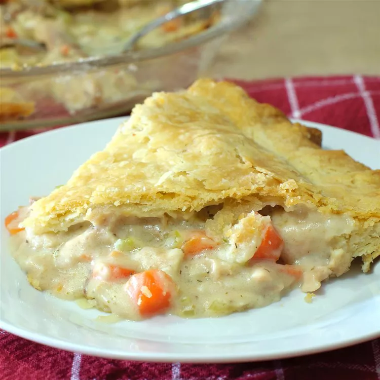

Chicken Pot Pie

This is a a tasty recipe of how to make the classic chicken pot pie.
Chicken pot pie is a very warm and filling dish that anyone can enjoy, especially on a cold day.
Ingredients
- 1/3 cup butter
- 1/3 cup chopped onion
- 1/3 cup all-purpose flour
- 1/2 teaspoon salt
- 1/4 teaspoon ground black pepper
- 1 3/4 cups chicken broth
- 2/3 cup milk
- 2 cups chopped cooked chicken
- 1 (14/5 ounces) can of peas and carrots
- 1/2 (15 ounces) can whole new potatoes, drained
- 1 (14.1 ounces) package double-crust pie pastry, thawed
Steps
- Preheat the oven to 425 degrees F
- Melt the butter in a large skillet over medium heat. Cook and stir onion, flour, salt, and pepper in hot butter until onion is translucent, about 5 minutes.
- Pour in broth and milk; bring to a boil and cook until slightly thickened, about 1 minute. Remove the skillet from heat and stir in chicken, peas and carrots, and potatoes.
- Press 1 pie pastry into the bottom of a 9-onch, deep-dish pie pan. Pour chicken mixture into pie pastry. Top with remaining pastry and press edges together to seal. Cut several slits in top pastry. Place pie on a baking sheet.
- Bake in the preheated oven until crust is golden brown, about 30 minutes. Let pie cool and let the filling thicken at room temperature for about 15 to 20 minutes before cutting.